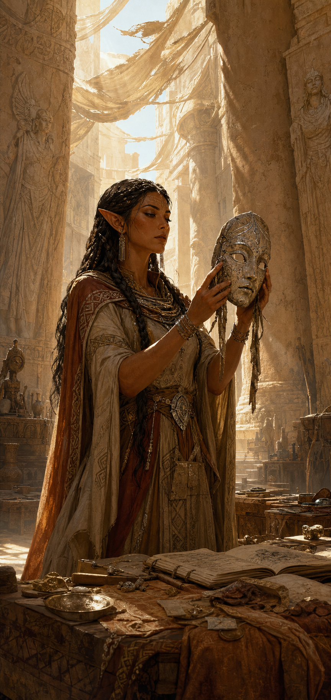
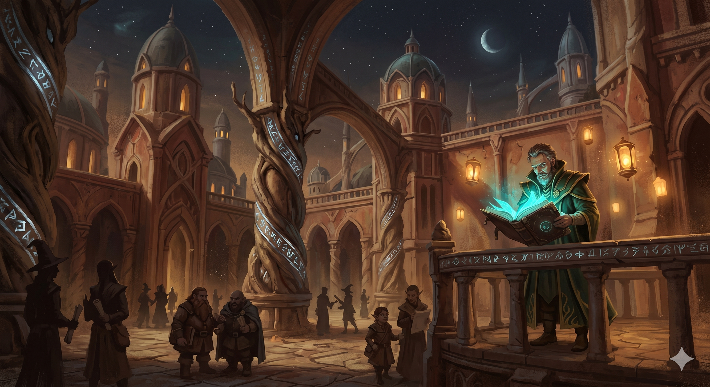
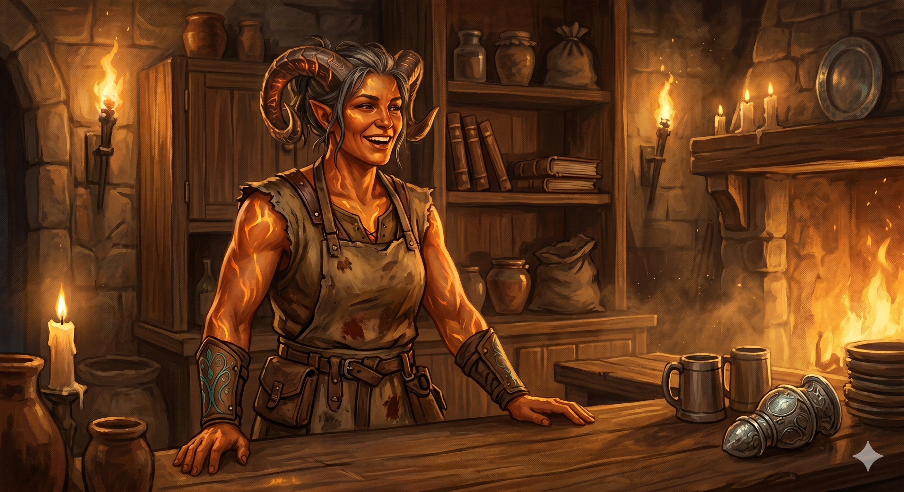

A cela
madrugada · abrir a sessãoDecide a cena: o flashback passa informação de propósito. Corte assim que alguém, jogador ou Rhiannon, disser em voz alta que foi o assistente.
Puxa a cena
Rescaldo e Celidwen
minutos depois · casa alugadaDecide a cena: só acontece se o grupo ainda estiver na casa; se já saiu, Celidwen chega tarde demais. Atilla não morre de qualquer forma.
Puxa a cena
Quem está aqui
Se a mesa travar
- A chegada de Celidwen só acontece se o grupo ainda estiver na casa.
- Ludger pode alegar a morte de Atilla e tratá-lo em segredo; Celidwen sabe.
O que se descobre / o que se solta
Recompensa
recompensasSe o grupo já saiu, Celidwen chega tarde demais.

Universidade e Llosg
ainda de madrugada · AthroniaethDecide a cena: o diário está no fundo falso da caixa. Arcana CD 15 ou Investigação CD 20 para encontrar; o mímico ataca ao destravar o fundo.
Puxa a cena
Quem está aqui
Se a mesa travar
- Universidade e amanhecer ocorrem de qualquer forma.
- A Mão não sabe que o grupo sobreviveu ao ataque.
- O diário tem outras fontes: membros da Mão conhecem a doutrina.
O que se descobre / o que se solta
Pistas
segredosRecompensa e Mão
A Mão de Athroniaeth quer Ffin e o Simeno sem restrição · recompensas
Outras cenas de madrugada
conforme a mesa · sem ordem fixaDecide a cena: a ordem é sugestão, não trilho. Puxe a cena que a ficção pedir.
Puxa a cena
Quem está aqui
Se a mesa travar
- Ordem é sugestão; puxe o que a ficção pedir.
- Maya pode informar de um grupo que foi se encontrar com membros de Aella.

Amanhecer e cerco
amanhecer · FfinDecide a cena: o amanhecer e os acontecimentos da universidade ocorrem de qualquer forma, com ou sem o grupo.
Puxa a cena
Quem está aqui
Se a mesa travar
- Ffin amanhece de qualquer forma; Ava pode levar a outros Doreán.
- Atilla não morre; Ludger anuncia e trata em segredo.
O que se descobre / o que se solta
Pistas
segredosRecompensa
recompensasFfin amanhece pronta para um cerco, com ou sem o grupo.

Fechamento
fim de sessão · ganchosDecide a cena: amarre o que ficou e aponte o próximo passo. O Markdown é a fonte de verdade.
Puxa a cena
Quem está aqui
Se a mesa travar
- Quem evitar o mímico sai sem a Pérola do Poder.
- O diário tem outras fontes: membros da Mão conhecem a doutrina.
O que se descobre / o que se solta
Pistas em aberto
Yawar · Ignis Fênix · segredosLocais
locaisRecompensas
recompensas